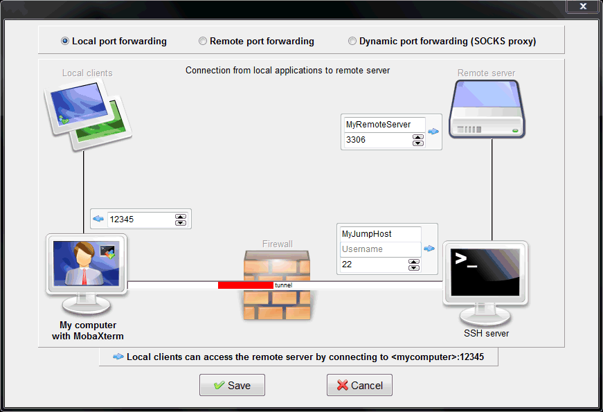

Remote Unix/Linux Servers¶
Introduction¶
There are two ways to use Jupyter on a remote Unix/Linux server.
-
The less-usable way, but which is simpler to get started with, is simply using Jupyter Console within a remote terminal. This gives you many—but not all—of the features of
stata_kernel, including syntax highlighting, free-flowing comments, autocompletions, and#delimit ;support. To do this, all you need to do is installstata_kernelon the remote server (Stata must also be installed on that remote server). -
The much more powerful way to run Jupyter on a remote server is to set it up so that you're working with JupyterLab in your local web browser, or with Hydrogen in Atom running locally, but where all the computation happens on the remote server. This is a little more involved to set up, but, once running, makes working on a remote server effortless.
The rest of this document explains how to set up the latter method.
Warning
It's important to understand the security implications of allowing remote access to your machine. An improperly configured server or a Jupyter Notebook server without a password could allow an attacker to run arbitrary code on your computer, conceivably accessing private data or deleting files.
Overview¶
This setup is one of my favorite parts of Jupyter. Since very little information is sent back and forth, this setup has very low latency, which means that it's fast even on slower networks. With this setup, if you're waiting on output, it's likely because Stata is slow, not the connection.
When using a program like tmux or screen on the server, you can reconnect to the same Jupyter kernel (and thus the same Stata session) after becoming disconnected from the network (i.e. if a VPN times out). In contrast, with a normal console or GUI Stata session, there is no way to reconnect to the running Stata session, and you'd have to recreate the state of the environment from scratch.
To understand how to set this up, it's helpful to know a bit about how Jupyter works. Jupyter has a "client-server model":
- the client (i.e. the Notebook, Hydrogen, or console) accepts user input and displays output.
- the server (the Jupyter internals) receives input from the client, forwards it to Stata, retrieves the results, and sends them back to the client.
Usually, both the client and server run on the same computer. However, this is not a requirement; they just need to be able to communicate with each other.
When working with remote servers, you'll instead run the client on the computer you're physically at and the server on the computer on which computation should happen.
Network Ports¶
A network port is a numbered entity that defines what type of communication to access.
For example, HTTP which defines how websites are loaded in your browser, runs on a specific port (80). So going to example.com in your browser is the same as going to example.com:80. The :80 is just usually omitted.
Instead of loading web pages, we need to configure it so that your browser loads the data from Jupyter.
By default, the Jupyter server process runs on port 8888. This is why, when you run Jupyter Notebook on your local machine, you'll usually see http://localhost:8888 in the address bar. This means that the Jupyter server process is emitting data on port 8888 on the local computer.
When working with Jupyter remotely, you'll have to know what port Jupyter is running on so that you can forward the remote port to your local computer during the SSH connection. This is the core of the step that connects the server process on the remote computer to the client process on the local computer.
Set up¶
There are two options for what to use on the server:
- Jupyter Notebook Server: This is relatively simple to set up and does not need administrator privileges. Though not designed for use on a multi-user server, it is possible to use on one.
- JupyterHub: This is Jupyter's official solution for servers with multiple users. This is much more difficult to set up (and might need administrator privileges) and I won't go into details here.
The rest of this guide assumes you're installing the Jupyter Notebook server. Full documentation is here.
Info
stata_kernel must be installed on the server, the computer that is doing the computations. Neither Jupyter nor stata_kernel (nor Stata) needs to be installed on the client computer.
The following instructions assume you are able to connect to the remote server through SSH. Setting up an SSH server is outside the scope of this guide.
Creating the configuration file¶
On the server computer run in a terminal
jupyter notebook --generate-config
This creates a configuration file at one of three locations on the remote computer:
- Windows:
C:\Users\USERNAME\.jupyter\jupyter_notebook_config.py - OS X:
/Users/USERNAME/.jupyter/jupyter_notebook_config.py - Linux:
/home/USERNAME/.jupyter/jupyter_notebook_config.py
Connecting with SSH¶
Linux and macOS¶
A usual SSH connection can be created from the terminal by running:
ssh username@host
In order to connect to the remote Jupyter session, we need to forward the port that Jupyter is running on from the remote computer to the local computer. If Jupyter is running on port 8888, we can forward the remote port to the same local port by running
ssh username@host -L 8888:localhost:8888
Windows¶

Here's information for how to forward a remote port using Mobaxterm. In MobaXterm, go to Tools > MobaxtermTunnel > New and select Local port forwarding. The most common configuration, clockwise from left, is:
8888localhost8888- the server hostname, i.e.
server.orgor its full IP address - your username, i.e.
john_doe 22
Full explanation, clockwise from left
- The "My computer with MobaXterm" box on the left (
12345in the image) is customarily8888, though it can be any 4- or 5-digit number. This is the number you'll type into your local web browser, i.e.http://localhost:8888. - The "Remote server" box in the top right should usually have
localhostand then the port on which Jupyter is running. Usually this is8888. - The "SSH server" box in the bottom right should have your server's hostname and username, and the port on which SSH is running (usually
22).
Starting Jupyter Notebook¶
Run jupyter notebook --no-browser --port=8888 in the remote terminal.
On your local computer, go to http://localhost:8888. It should ask you for a token to sign in, which normally will be printed in the remote console once Jupyter Notebook starts.
Then you can start a Jupyter Notebook session with the Stata kernel like usual.
Here's more documentation for connecting to a remote kernel from Hydrogen. You can even connect to multiple servers at the same time.